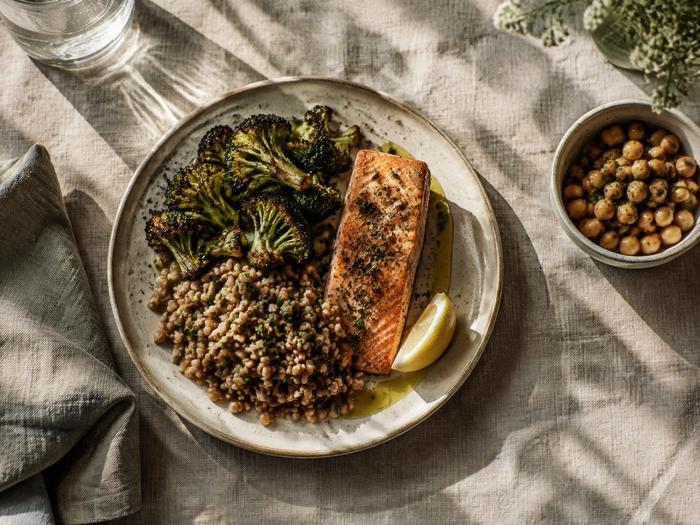
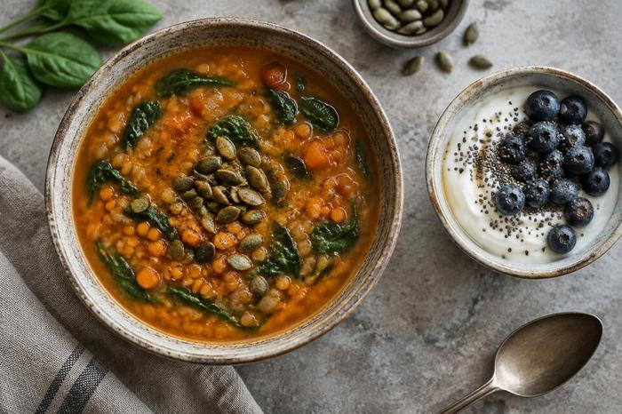

Nourishing
Whole ingredients and thoughtful nutrition, without losing the pleasure of eating.

Julie Andrews · The Healthy Epicurean
Chef, registered dietitian and cookbook author Julie Andrews brings good food and good health together with simple, delicious recipes.
MS, RDN, CD, FAND · Culinary storyteller · Midwest kitchen
A seat at Julie’s table
Good food and good health belong together. Julie makes nourishing food feel delicious, welcoming and easy to bring into everyday life.

At The Healthy Epicurean, Julie shares approachable recipes that are nourishing, unfussy and full of flavor. As a chef and dietitian, she develops, tests, styles, photographs and writes her recipes from her Midwest kitchen.
More about Julie ↗Whole ingredients and thoughtful nutrition, without losing the pleasure of eating.
Comforting, colorful recipes made for flavor, texture and satisfaction.
Practical inspiration for home cooks and busy everyday routines.
Meet Julie
Julie Andrews, MS, RDN, CD, FAND is a culinary storyteller, trained chef, registered dietitian, four-time cookbook author, recipe developer, photographer and writer.
Julie’s published biography lists graduate study in human nutrition, undergraduate study in biomedical sciences and an associate degree in culinary arts.
Julie earned the RDN credential in 2010 and has worked across food, nutrition communications and recipe development.
She was named a Fellow of the Academy of Nutrition and Dietetics in 2020, recognizing professional contributions to the field.
Culinary nutrition
Julie’s work brings culinary technique and nutrition expertise together across recipes, books, visual storytelling and food education.
Work with Julie
Julie partners with publishers, food brands and organizations to create useful, engaging culinary nutrition content.
Original recipe development, testing, adaptation and nutrition analysis for cookbooks, brands and editorial projects.
Discuss a project ↗Food styling, recipe photography and video that make each dish feel inviting and achievable.
Explore collaborations ↗Nutrition and wellness writing, editing and fact-checking, plus cooking demonstrations, classes and meal planning.
See work opportunities ↗Cookbooks & kitchen inspiration
Julie’s cookbooks bring evidence-informed nutrition and everyday cooking together, with recipes for a range of tastes and needs.
Explore Julie’s cookbooksRecipes and guidance inspired by food patterns that support brain health.
Practical cooking ideas based on the MIND eating pattern.
Approachable recipes for a heart-conscious way of eating.
A collection of 27 comforting soup recipes for home cooks.

Recipes & resources
Browse recipes by meal, season and ingredient, or find a new cookbook for your kitchen. Julie’s newsletter brings fresh inspiration to your inbox.
Explore the site ↗From Julie’s kitchen
Follow Julie’s work, explore her recipes and find inspiration for your next meal.
The person behind the recipes
Julie lives and works in the Midwest, where good food, family and time outdoors all find a place at the table.
Chef · Dietitian · Cookbook author
Julie loves sharing food that feels generous, comforting and grounded in real ingredients. Away from the kitchen, she enjoys gardening, camping and hiking with her family.
Connect on LinkedIn ↗Stay connected
Follow along for recipes, cooking inspiration and news from The Healthy Epicurean.
Let’s work together
For recipe development, food photography, writing, cooking demonstrations or other project inquiries, visit Julie’s collaboration page.
Start a conversationGeneral contact ↗Make your own palette
For clear contrast, pair a light page with dark text or a dark page with light text.